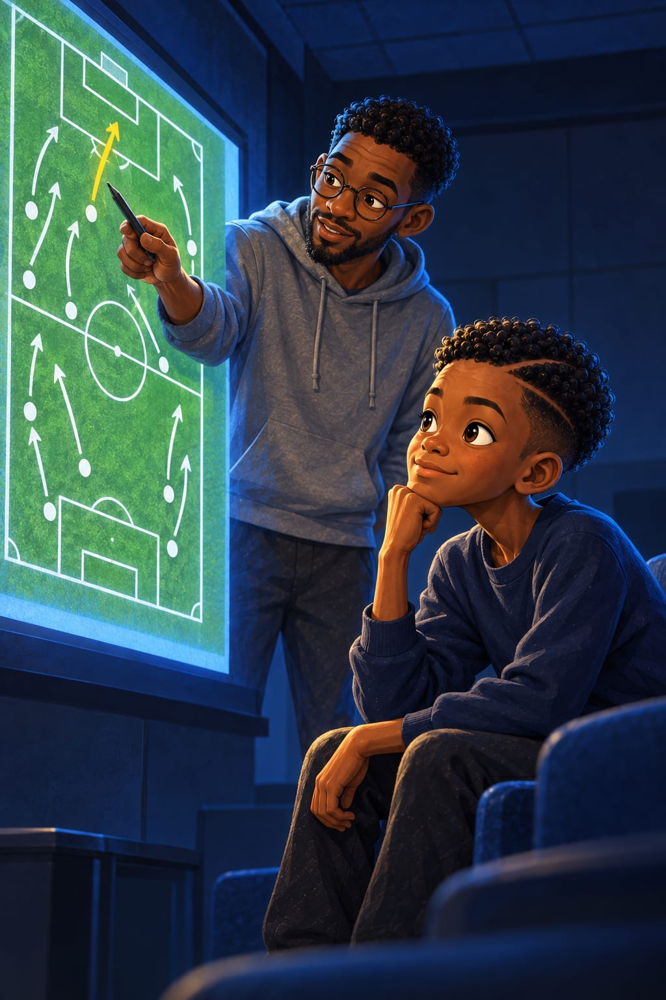
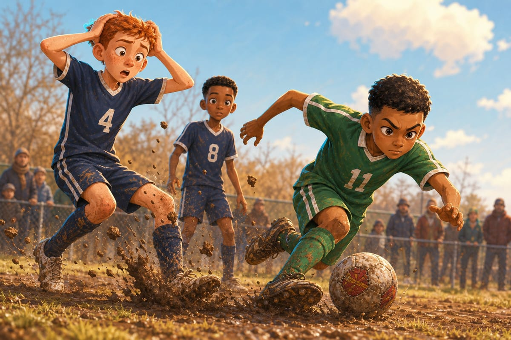
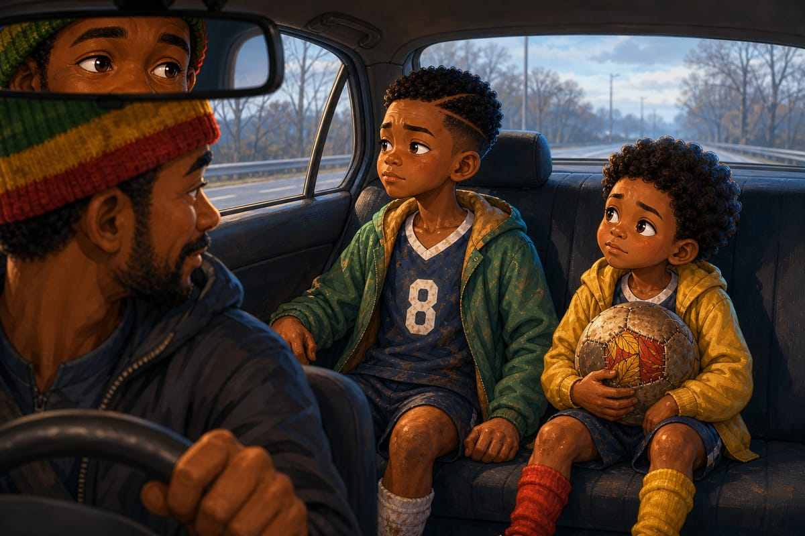
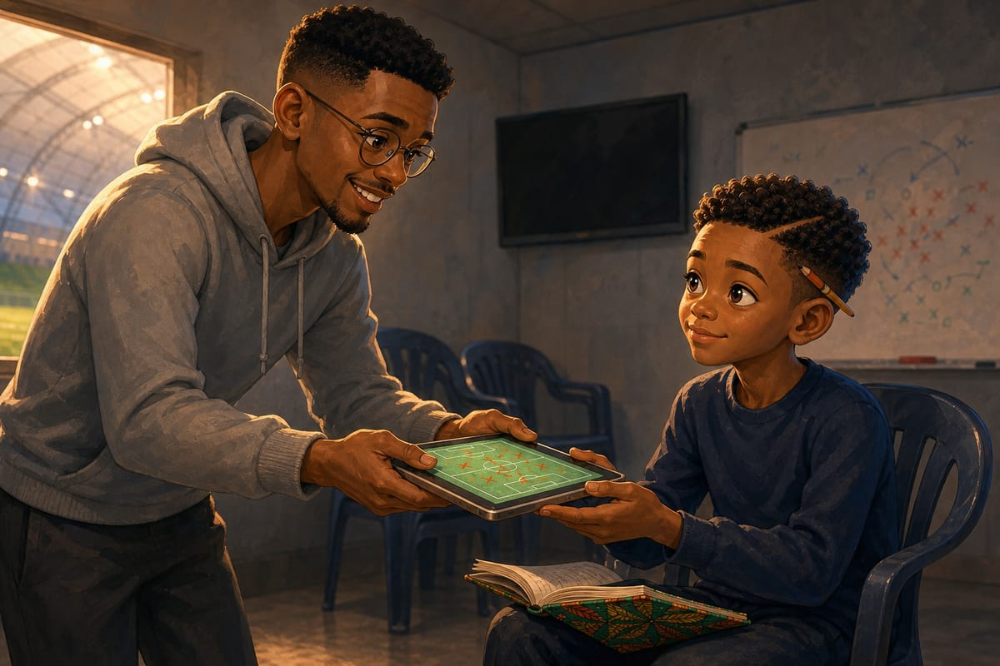

Soixante-dix pour cent

Clap, clap, clap.
« Nice pass ! »
« Great ball, eight ! »
« Keep it, boys, keep it ! »
Chaque passe, les parents applaudissent.
On dirait un concert, pense BriBri.
Premier samedi d'avril, premier match de printemps. La neige est partie, il reste de la boue près des poteaux. Sur la ligne, Papa a mis son bonnet vert, rouge et jaune. Maman dort : elle a travaillé toute la nuit.
BriBri porte le maillot bleu marine de l'académie, avec un grand 8 blanc dans le dos. Pas son maillot vert de Bonamoussadi. Mais un 8.
« Tu as ta tête de l'avion », a dit Kaydoudou avant le coup d'envoi.
« Non. Aujourd'hui, j'ai ma tête de numéro 8. Je vais prouver que je le mérite. »
En face, les Severn River Hawks, d'Annapolis, en maillots verts.
« Hawks, ça veut dire faucons, a dit Diego dans la voiture. Les oiseaux qui tombent du ciel sur les souris. »
Leur numéro 11 est petit et maigre, avec des yeux de chat. Il ne court presque pas. Il attend, les mains sur les hanches.
« Lui, il dort », rigole Kaydoudou.
« Non, dit BriBri. Il guette. Comme un chat devant un trou de souris. »
Potomac Valley a le ballon tout le temps.
« Bri ! » appelle Owen, le grand défenseur roux.
BriBri reçoit. Il se tourne.
« Diego ! »
« Bri ! »
« Owen ! »
« Bri ! »
Gauche, droite, gauche, droite. Les Hawks, eux, se serrent devant leur surface, épaule contre épaule. Un mur de briques vertes.
« Here ! Here ! I'm open ! » hurle Tyler, derrière le mur.
« Go forward, Bri ! crie Coach Whitfield. Be brave ! »
BriBri regarde le mur. Trop risqué. Il donne à Owen.
« Nice pass ! » applaudit une maman.
À la mi-temps, c'est 0‑0. Kaydoudou avale des quartiers d'orange, le jus sur le menton.
« Ils ne touchent même pas le ballon ! On joue au chat et à la souris. C'est nous la souris, et la souris gagne ! »
« Bro, they're not even trying », rit Diego.
« Good job, guys, dit Coach Whitfield. Now, please… somebody shoot ! »
« I'm trying ! » proteste Tyler.
BriBri, lui, regarde le numéro 11, qui boit son eau, tranquille.
« Il n'a pas couru, dit-il. Il n'a même pas transpiré. »
« Parce qu'il est nul ! » dit Kaydoudou.
« Ou parce qu'il attend quelque chose. »
48e minute. BriBri reçoit au milieu, face au mur. Il fait demi-tour. Passe en arrière vers Owen. Une passe tranquille. Une passe propre.
Owen veut la donner à son voisin. Le ballon tape une motte de boue. Ploc. Il saute de travers.
Et le numéro 11 n'attend plus.
Il pique comme un faucon. Il vole le ballon. Une touche, deux touches, trois. Quarante mètres de course. Frappe croisée.

Chhh. Le filet.
0‑1.
« Sorry, Bri ! Sorry ! » crie Owen, les mains sur la tête.
Le numéro 11 lève juste un doigt vers le ciel. Une occasion de tout le match. Une seule. Au fond.
« Le faucon a mangé la souris », souffle Kaydoudou.
Potomac Valley attaque. Enfin… on se fait des passes. Plus vite. Moins bien. Tyler crie « Here ! » jusqu'à perdre sa voix. Kaydoudou dribble trois Hawks et perd le ballon contre le quatrième.
Tuuut. Fin du match. Les Hawks sautent les uns sur les autres, comme s'ils avaient gagné la Coupe du monde.
Au moment de se serrer la main, le numéro 11 s'arrête devant BriBri. Petit sourire en coin.
« So many passes, eight. So pretty. »
« Tant de passes, traduit Diego entre ses dents. Si jolies. »
Les oreilles de BriBri brûlent.
« Laisse tomber, bro, souffle Diego. Il est jaloux de tes passes. »
Une maman en bonnet à pompon lui tapote l'épaule.
« Unlucky, honey. You guys played so well. You had the ball all game ! »
« Pas de chance, mon chéri, chuchote Diego. Vous avez si bien joué. Vous avez eu le ballon tout le match. »
« Thank you », dit BriBri.
Dans la voiture, Papa essaie de sourire.
« Vous avez eu le ballon tout le temps, les garçons. C'est déjà ça. »
« Oui, dit Kaydoudou. Et le faucon a eu le but. »
« Papa, demande BriBri. Un réseau où tout tourne, mais où rien n'arrive… ça sert à quoi ? »
Papa le regarde dans le rétroviseur.

« À rien, mon fils. Un réseau, c'est fait pour que les choses arrivent. »
BriBri se tait. Il a un caillou dans le ventre. Le même qu'à Douala, quand les grands disaient « Il joue propre, ce petit ! » et que Tonton Fokou, sur son bidon jaune, ne disait rien.
Bien joué ? On a perdu.
Lundi, pas de ballon. L'équipe s'entasse dans une petite salle grise à côté du dôme. Ça sent le feutre et les chaussettes. Marcus Bell branche sa tablette sur l'écran, tout doucement, comme on pose un oiseau dans un nid.
Coach Whitfield s'assoit au fond, les bras croisés. Elle ne sourit pas.
« Okay, guys, dit Marcus en remontant ses lunettes rondes. Saturday. Let's look at the numbers. »
Diego s'assoit au premier rang, à côté de BriBri, pour traduire. Derrière eux, Kaydoudou se cache la tête dans les mains.
« C'est comme chez le docteur, gémit-il. Quand il prépare la piqûre. »
Un chiffre apparaît. Énorme. Jaune.
70 %.
« Seventy percent. Possession. »
« La possession, c'est le temps où on a le ballon, explique Diego. Soixante-dix pour cent du match ! »
« We destroyed them ! » crie Tyler.
« On les a écrasés », traduit Diego.
Un murmure fier traverse la salle. Owen lève le poing.
Deuxième chiffre : 312.
« Three hundred and twelve passes. Them ? Ninety-one. »
« Fiouuu ! » siffle quelqu'un.
« Trois fois et demie plus que les Hawks », calcule BriBri tout bas.
Et pourtant, 0‑1.
Marcus attend le silence. Le troisième chiffre arrive. Tout petit, seul au milieu de l'écran blanc.
« Five. »
« Cinq quoi ? » demande Kaydoudou entre ses doigts.
« Five touches in their box. In sixty minutes. »
« Cinq ballons touchés dans leur surface, traduit Diego lentement. Le grand rectangle devant le but, là où on marque presque tous les buts. Cinq fois en une heure. »
Silence.
Plus un bruit. Même la chaudière, derrière le mur, a l'air de retenir son souffle.
« Say it again, Marcus », dit Coach Whitfield depuis le fond.
« Five. »
« Cinq, répète Kaydoudou. Une seule main. Pour tout le match. »
« Now, watch this », ajoute Marcus.
Le terrain apparaît, vu d'en haut. Puis les flèches. Chaque passe du match devient un trait blanc. Dix. Cent. Trois cents. Ça tourne sur les côtés. Ça tourne derrière. Des boucles, des U, des allers et retours.
« Des spaghettis ! s'écrie Kaydoudou. Un plat de spaghettis renversé ! »
« And here », dit Marcus en montrant le but des Hawks. « Nothing. »
« Et là, rien », traduit Diego.
« Même pas une miette ! » dit Kaydoudou.
« But I was open ! dit Tyler. All game ! »
« You were, dit Marcus doucement. Nobody saw you. »
« Tu étais seul, chuchote Diego. Personne ne t'a vu. »
Moi, je l'ai vu, pense BriBri. Et je n'ai pas osé.
Marcus lève son stylo. Il pose la pointe sur une petite flèche. La seule flèche jaune de l'écran. La seule qui entre dans la surface.
« One pass. Only one pass went into the box. »
BriBri ne bouge plus. Au premier rang, dans son sweat bleu marine, le menton dans la main, il fixe l'écran. La lumière froide lui tombe sur le visage.
Une seule.
« An ocean of passes, dit Marcus. And no boat. »
« Un océan de passes, souffle Diego. Et pas de bateau. »
Marcus touche encore l'écran. Toutes les flèches s'effacent, sauf celles du numéro 8.
Les voilà, ses passes. Courtes. Nettes. Presque toutes sur le côté ou en arrière.
« Ouh là, souffle Kaydoudou derrière lui. Elles reculent toutes, tes passes. Comme des crabes. »
« Fifty-eight out of sixty-one, dit Marcus. Best accuracy on the team. Very clean. »
« Cinquante-huit passes réussies sur soixante et une, chuchote Diego. Le meilleur de l'équipe. Très propre. Bravo, bro ! »
Propre. Le même mot qu'à Douala.
« Des révérences », murmure BriBri.
« Des quoi ? »
« Des révérences. Comme quand on se penche devant une reine. Après vous, Majesté, je vous en prie. Mes passes saluent le ballon. Et elles ne l'emmènent nulle part. »
Diego ne comprend pas. BriBri, si. J'ai traversé l'océan. J'ai changé de maillot et de langue. Et j'ai apporté mes passes polies dans ma valise.
Dans sa tête, une voix rauque arrive de très loin. Houou !
« Une passe sur le côté, c'est poli. Une passe qui traverse, c'est utile. Le football n'est pas un salon, mon fils. »
Au fond de la salle, Coach Whitfield se lève.
« Listen to me. Possession is a tool, not a trophy. » Elle laisse la phrase tomber, puis elle la répète, plus lentement. « A tool. Like a hammer. Nobody wins a prize for holding a hammer. You win when you build something. »
« La possession, c'est un outil, pas un trophée, traduit Diego. Comme un marteau. Personne ne gagne un prix parce qu'il tient un marteau. On gagne quand on construit quelque chose. »
« Moi, je gagnerais, dit Kaydoudou. Je tiens super bien les marteaux. »
Toute la salle éclate de rire. Même Coach Whitfield.
BriBri, lui, ne rit pas. Sous la table, il a ouvert son carnet sur ses genoux.
Les autres sortent en se bousculant. BriBri reste assis.
« Tu viens ? » demande Kaydoudou depuis la porte.
« Vas-y. J'arrive. »
« Tu fais quoi ? Des maths ? »
« Une question. Une question de foot. »
« Une petite ? »
« La plus grande. »
Kaydoudou le regarde une seconde. Puis il ferme la porte tout doucement.
BriBri écrit une phrase. Il la barre. Une autre. Barrée aussi. Puis la vraie arrive, d'un coup, comme une passe qu'on voit avant de la recevoir. Il appuie si fort qu'elle s'imprime sur la page d'après :
« Est-ce que cette passe nous rapproche du but, ou est-ce qu'elle prépare celle qui nous rapprochera ? »
Elle ne dit pas : plus de passes en arrière. Elle dit : fais-les, mais pour quelque chose.
Une ombre tombe sur la page. Marcus est là, la tablette sous le bras. Il penche la tête pour lire.
« Do you speak French only, or… ? »
« A little English. A little more each day. »
« What did you write ? »
BriBri cherche les mots, un par un, comme on traverse une rivière de pierre en pierre.
« Is this pass… going to the goal ? Or is it… preparing the next pass… that goes to the goal ? »
Marcus ne dit rien. Longtemps. Derrière ses lunettes, ses yeux brillent comme ceux de Papa quand toutes les petites lumières d'un réseau passent au vert.
« And if the answer is no, and no ? »
« Then… it is a… » Il ne connaît pas le mot anglais. Alors il se penche en avant, très poliment, comme devant une reine.
Marcus éclate de rire.
« A bow ! Yes ! That's the question, man. That's the only question. Most coaches never ask it. »
Puis Marcus Bell, qui ne prête jamais sa tablette à personne, la tend à BriBri.
« Tu veux apprendre à voir le match comme moi ? »
En français ! Pas juste un « bonjour », comme avec Kaydoudou au premier entraînement. Une vraie phrase, lente et cabossée, qui fait rouler les r comme des billes.
« Vous… vous parlez vraiment français ? »
« At college. Two years. I was terrible. Like your brother in English. »
BriBri sourit. Pour la première fois depuis samedi.
Il prend la tablette. Elle est lourde et tiède, comme une chose vivante. Tonton Fokou dessinait ses plans dans la poussière avec un bâton. Ici, on les dessine avec de la lumière.

« Oui », dit BriBri. Puis, parce qu'on est en Amérique : « Yes. »
Marcus fait glisser l'écran. Un autre dossier s'ouvre. En haut, un numéro : 33. En dessous, des croix rouges. Des dizaines de croix rouges.
Aïe, pense BriBri. Kaydoudou ne va pas aimer ça.